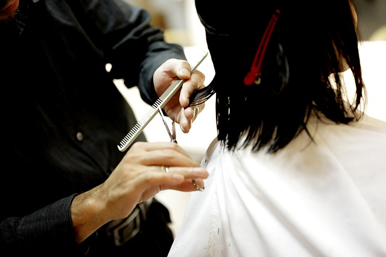

Jerome Hillion Hair And Makeup
At Jerome Hillion Hair and Makeup Beauty Salon we have the knowledge and the passion to not only meet our clients needs but exceed their expectations.
BookingAt Jerome Hillion Hair and Makeup Beauty Salon we have the knowledge and the passion to not only meet our clients needs but exceed their expectations.
BookingJerome Hillion Salon’s top priority is the customers’ health and satisfaction. We’re only using top-quality cutting-edge products for our manicure and pedicure services.
Our salon is committed to using the most amazing products available on the market for making your manicure and pedicure experience super-luxurious.
We are incorporating non-toxic gel nail polish brands into our manicure services.
Our salon has added Orly GelFX gel nail polish to our selection of gel nail polishes that we are using on our clients.
Some clients are afraid to try gel manicures because they believe that gel nail polish can harm their nails.
That’s why we prefer to use the safest possible gel nail polishes for our clients.
Even though gel nail polishes are mostly harmless, they can still contain some unpleasant ingredients.
That’s why we prefer to work with non-toxic gel nail polish brands, whose products are completely free of those components.
Orly GelFX is our preferred polish for all of our manicure and pedicure services.
It’s a 9-free gel nail polish that is infused with vitamins and minerals to strengthen the nails while they are coated with this product.
GelFX non-toxic gel nail polish is free from formaldehyde, toluene, etc.
It won’t destroy or weaken the client’s nails. The nails will grow stronger under the vitamin-infused gel nail polish coating. The clients will be able to grow their nails longer. No more peeling or cracking of nails that makes the clients cut them short.
You can be sure your nails will stay healthy after you book an appointment at our salon.
Since we are committed to the safety of our customers, we prefer using safe nail equipment in addition to the safest nail materials possible.
Our state-of-the-art UV nail lamps are equipped with a safe low power setting.
This setting prevents heat spikes while the customer cures their gel polish or polygel nails. It’s especially handy when curing the first layer of any gel manicure — gel base coat. People often feel burning and even get real burns on their nails and fingers during the base coat curing process. This setting eliminates the risk of heating and burns.
Our clients can be sure they won’t get their nails and fingers damaged by overheating when they are at our salon using our lamps.
We are one of the first salons in our area to debut the new polygel material for building nail extensions for our clients.
Polygel is a strong and safe material for making nail extensions that will be on par with acrylic nails.
It sets very quickly and is extremely strong, just like acrylics.
At the same time, it’s safe for your nails and skin. This material is known not to cause bad reactions even for those people who have a problem with gel nail polishes.
Our salon’s nail technicians work with polygels very quickly. So they can create a whole set of strong and beautiful polygel nail extensions in under just a couple of hours.
Another plus of polygel nails is that our nail technicians don’t need to use a smelly monomer, like the one used for acrylic nails.
That’s why polygel nails are perfect for those clients that are sensitive to chemical smells or allergic to acrylic monomer.
We have just equipped our salon with new and innovative plumping-free pedicure chairs with foot massage.
These chairs are super comfortable.
We always properly rinse, sanitize, and maintain the pedicure bowls of these pedicure chairs to keep them free of harmful bacteria and fungi that can affect our clients.
Enjoy a relaxing and safe pedicure procedure while our nail technician works on your toenails.
We use special safe and acid-free nail bonders and primers to ensure gel nail polish, acrylic, and polygel nail extensions stay longer on your nails.
These nail preparation products are non-harmful for your natural nails and won’t affect the skin around the nail plate and cuticles.
At the same time, they increase the longevity of your manicure so you can safely wear your new nails for at least two weeks without lifting.
Our nail prep products are certified as safe and acid-free.
Again, you can be absolutely sure that a visit to our salon will be safe and won’t harm your nail plates and skin.
Our salon’s staff is very serious when it comes to the sterilization of our tools and equipment.
You can rest assured that a visit to our nail salon is absolutely safe for your health.
We use a multi-step procedure to keep all our salon and tools sterile and any germ, bacteria, and fungus-free.
First, we use disposable and non-reusable emery board nail files, gloves, and orangewood sticks used for pushing away the cuticles.
Each of these items is only used once and is either disposed of, like orangewood sticks, or given away to the customer, like emery board nail files.
Our salon uses medical-grade autoclaves to sanitize all our non-disposable reusable tools, such as nail drill bits and nail clippers.
We sanitize all reusable tools in medical-grade autoclaves for at least 20 minutes before each new use, even though this is not required by the Board of Barbering and Cosmetology.
The autoclave uses high pressure and steam to kill all known infective organisms. It’s the most important step for disinfecting manicure tools and many salons skip this procedure.
We at the Jerome Hillion Hair And Makeup never skip this step. All our sanitation and sterilization procedures get fully documented and time-stamped.
All the reusable metal tools are placed in special bags with a color indicator and are inserted into an autoclave.
When the indicator changes color that means the sterilization procedure is finished and the tools in that bag are completely safe and clean.
Out nail technicians always take a bag with freshly sterilized instruments and unpack them from that special bag in front of the client.
We also rinse and thoroughly sanitize all our sinks and pedicure bowls in barbicide for at least 10 minutes, as required by the Board of Barbering and Cosmetology.
Rest assured that we always work and do everything for your safety and luxury comfort.
Welcome to our salon, you can book an appointment through our bookings page and we will be happy to serve you.
We at Jerome Hillion Hair And Makeup beauty salon and spa know that safety must always come first, as well as full accountability and satisfaction to our clients. This is why at our state-of-the-art beauty salon, we make sure to have all the necessary safety equipment to ensure your full safety and safety from bacteria or germ threat.
With all the equipment we have in the studio area, your safety is always of highest priority to us. Makeup studio professionals are licensed by the Department of Education, so we make sure that our clients and employees are covered as best as possible. Our team of experts are available to answer all your questions regarding the best way to keep safe and clean.
Our makeup studio products are the best the market has to offer. Being professionals in the beauty industry, we know what products to use and when, and how to clean them too. Therefore, we clean the studio environment completely to make sure that nothing is harmful and so you can spend less time working and more time enjoying. This makes us an all-time favorite in the makeup world!
We focus on the latest and top-quality hair and makeup salons in Fremont, along with some of the best in Everett as well. Visit us at Jerome Hillion Hair & Makeup today to find out what sets us apart from the rest. Our salon service has just the right kind of beauty to bring out your natural and healthy skin. Come check out our professional services for yourself.
We at Jerome Hillion Hair And Makeup salon want to make sure that our clients come and spend time with us because they want to, not because they feel they have to. To ensure this, we make sure that our salon is as clean and germ-free as possible. When it comes to hygiene and sanitation, we make sure that you get the best of services possible. From everything to make-up to hair styles, everything that makes up a man or a woman’s appearance should be as attractive as possible for you. You can visit us today at Jerome Hillion Hair & Makeup for all your hair, makeup and beauty salon needs.
At Jerome Hillion Hair And Makeup salon and spa, we make sure to use the best quality products to keep your look of health and beauty intact and attractive. As a stylist and beauty therapist, we want to make sure that our guests are satisfied in the best way possible, and that is why we always employ the best and most up-to-date equipment and tools that can bring out your natural beauty and make you the way you want to be.
The Attending Docent Program (ADP) is a training program for our Barbers and Hair stylists that teaches you how to use the different tools needed to help clients have a truly relaxing and therapeutic experience at the salon.
Learn MoreOur goal is to not only meet the needs of our clients, but to exceed their expectations. We understand that today’s consumer is looking for options when it comes to beauty and we will provide the tools to meet their needs. This has been accomplished through our high-quality products, professional staff, and exceptional services, which include hair, makeup, waxing and nail treatments. We have a philosophy that says, “beauty is about you,” which means our customers come first, and we would like to provide the best service at a quality that you would want for yourself. In short, we listen to what you want, and meet your needs with a professional approach.
We look forward to building long-lasting relationships with our clients and hope to earn their business for years to come.
Our services include hair styling, spa/wellness treatments, nail art, and customized products and styles. We have an incredible menu of premium, salon-exclusive products including treatments and scents inspired by all that is beautiful about the human body. We can work on the hair, face, and/or body for an all-over look, so you will always look your best!
We want you to feel beautiful and sexy every day! You can trust our team of professionals to enhance your beauty, confident to be your reflection. We will also make sure to see that the right impression is created every time so that you leave the salon looking absolutely stunning! We know that it is easy to go to a new hairstylist, make up artist or even a nail tech but we are not like other salons. At Jerome Hillion Hair and Makeup Beauty Salon we have the knowledge and the passion to not only meet our clients needs but exceed their expectations.
On-line Scheduling is currently available for new clients only! Appointments are important for the health and appearance of your hair and nails, we cannot guarantee you a specific appointment time for you. We do have 24 hour reception though. If you do make it in during hours of business you will most likely be seen on a same day same hour basis.
For all of our services listed on the website there is a no obligation option if you would like to inquire about any of the services. We will offer you a free consultative on all hair styles and textures.
We specialize in hair styling.We will make you feel confident in your own hair and make sure that you look and feel your best. We will work with you to understand your concerns and desires and use everything in our toolbox to achieve the look you are looking for.
Our clients enjoy searching through our many impressive inventory of products to get exactly what they desire. Whether you are looking for a soft do, new hair color, trim or styled highlights, we can help you achieve the perfect look for your hair. Our modern products are the perfect blend of form and function for your everyday looks!
Makeup is like your wardrobe; it changes you. A great, quality makeup foundation applied by a professional can transform you from a Sunday to a Monday and bring confidence to any occasion. Being conscious about how you apply your makeup is imperative for a flawless finished look. To find out how we can apply to you the perfect makeup solution please give us a call.
Your hair is probably your best asset to you. So we ensure that it stays that way! H is for Hair at Jerome Hillion & Makeup brings you the latest products that are specifically designed to help give you long-lasting hair that feels soft, sleek, and strong. Whether you’re in the market for new color or want your hair to just look a little better, we’re here to help.
Because waxing services are one of our staple services, we have all different types of wax to cater to your individual skin type, needs, and desires. We will apply the wax in the most professional way possible and determine the best setting for your session. We are ready to treat you to the amazing experience of a clean, smooth look.
Jerome Hillion & Makeup also offers professional acne treatment for you skin. Our technicians have years of experience in treating skin conditions. They are capable of providing professional services for individual skin needs.
Have you tried finding a professional Nail Technician? It is not always easy or effortless to find a professional looking one, which makes Jerome Hillion & Makeup the perfect solution for you! We offer any other types of manicures, including Gel Polish Manicures and Custom colors.
We also do a private party and receive referrals. This means that in addition to being able to pay for services at the scheduled appointment date and time (appointment booking is not mandatory), one can simply request a private party and we will work out the details. We do not ‘book out’ spaces for private party’s due to volume of service received, but if we do receive one, we will be more than happy to accommodate you and your party! Some people enjoy a warm hug with an added attention of being valued by their guest, so when we provide this service it helps them feel their event is special for them. This service is subject to availability, please check online or call to ensure availability and contact info.
Weddings, graduations, proms, etc. are all great opportunities to let us create a bridal look or pamper you during your special occasion. We will do all that we can to ensure that your needs and desires are a priority. We have the latest in products to create the perfect product application. We can find what the bride’s hair needs and make sure that she is happy and confident for the big day. We have everything you need in order to make you look the picture of perfection!
Another chance to find something that you never even knew you needed until you saw it at our shop! We have the best selection of unique makeup, skin care, hair accessories and jewelry to find you that perfect piece!
If you have a past client or friend that could benefit from your services, please do not hesitate to contact us and we will let them know.
Jerome Hillion & Makeup is a modern day, high-end professional, salon experience. From just the start of your journey, we will introduce you to new, original, exciting and inspiring products designed specifically for your hair, nail and/or skin needs. We work with the latest technology, tailored to your individual hair, skin, and nail needs. Our staff is always learning new methods to make you the best you can be. Our team makes everything personalized and unique to you and are focused on turning your images into reality.
About UsChoose from a wide range of different mani and pedi designs to suit your personal style and the occasion. Our creative team will custom-design your style and if you have your own design, we will professionally sketch it to help you achieve the look you’re looking for. They use the highest quality mineral-based ingredients for your mani and pedi and we also offer nitro curing.
Our professionals offer a range of popular cuts in cutting for all hair types and lengths. We also provide many specials throughout the year to keep our clients looking and feeling their best. If you are looking for a change of style we offer the quickest turnaround time possible and all our stylists are cosmetologists with a lot of experience.
Whether you’re looking for an In-Office facial or something a little more intimate, we offer everything you need to refresh and rejuvenate. Relax and let our professionals apply all the premium skin care products they use to professionally cleanse, tone and replenish your skin. Our advanced techniques enhance your skin for healthier, brighter looking skin. No experience needed!
Offering full body waxing in three times a week on Thursdays, Fridays and Saturdays. Ask us about Holiday appointments and seasonal pricing and specials. Fully Complimentary Services Offerings. Services include: -Arm, Shoulder, Back, Bikini, Under Arms, Brazilian, Male – Full Body, Partial – Leg, Legs, Feet, Existing Conditions – Foot Fade Fingers, Stomach, Back of Neck – Waxing Only – Under Arms
We offer a variety of relaxation massage techniques including Swedish, Deep Tissue and Reflexology. All therapists have a Certificate in Professional Training in Vibration, Therapeutic Massage, or some variation. If you are looking for a relaxing massage experience, stop by our well-lit, clean, spacious gym where only the highest-quality services are given. It is a family friendly facility and does not contain any flashing lights to make your experience better. If you need to bring a pet please give us prior notice.
A spa environment and treatments by professionals gives your spa treatments the complete package that you want and the most upscale spa atmosphere. Save when you book packages. Visit the spa anytime you like! All treatments are available for the entire family and we offer a 25% discount on any service when you mention this website.
Makeup is an easy and fun way to customize your appearance. We can help you define and accentuate your features and enhance your look. Create a look that makes you happy and shows off your special personality. Choose between light to medium foundation.
• Blowout services
• Partial to full hair removal
• Hair colors and highlights
• Wigs and toupees
• Modern makeup looks
• Fx, creaseless, false eyelashes, lashes, mascara and lashes
• Implantation (Cosmetic)
• Prepping and cleansing techniques for professional services
• Eyelash extensions
• Colors, Nails and false nails
• Weddings, Parties, Anniversaries
• Engagement rings/jewelry
• Cleaning & filing
• Nail shapes
• facials for acne prone skin, normal, combination and oily
• Steam treatments
• Waxing
• Deep tissue (medicine)
• Reflexology (exercises for treating specific regions of the body)
• Swedish
• Therapeutic
• Combination treatments
• Hot stones
• Foot & hand & seat/leg/back
• Craniosacral therapy (help stop excessive muscular tension)
• Indian Head reflexology
• Body Polish (special for skin issues)
• Foam
• Mesotherapy (micro-needling of the skin/body)
• Intensive hydration
• Watsu (Hydrotherapy)
• Whirlpools/Sauna
• Dicholor
• Medical (cleansing, regrowth of epidermis)
• Flower Remedies (Ayurveda)
• Gemstone therapy
• Enzymes
• Vitamins & supplements
• Custom Treatments
• N-Light
• VLaser
• IPL
•Microcurrent
“I began my career in the beauty industry working for Louis Tua and Co. At that time, I became interested in the career of hair styling,” Hillion said. “I like to try new trends and color combinations when it comes to hair styling, and the results show in the feedback my clients give me.”
Jerome shared that he has always known he wanted to run a beauty salon, and when he began opening his own salon six years ago, he knew that he wanted to offer his client’s, “professional services at a quality price.”
“I can’t thank my clients enough for bringing their friends and family here for a well-deserved pampering,” he shared. “Their patience, loyalty, and confidence give me a warm glow as I get to create a fresh new look for each of my clients every day. I love my clients to be healthy, sexy, and confident.”
Jerome’s family will always be in the industry because it gives them the means to “stretch their family income with a salaried position, which is the basis for any business,” he explained.
“I encourage my employees to give back to the community in all manners possible,” he added. “I have given scholarships to local high schools and spoken at multiple workshops and trade shows as a speaker for local salons. I look forward to many years of collaboration, growth, and success for my salon and for the clients.”
“I always wanted to become a nail tech when I was younger,” Becky Brewer said. “I started working at a salon at 17, and then went on to nail technician school when I turned 18.”
Becoming a CND Technician was another dream come true for her, but it wasn’t until a few months ago that she finally completed the program, and has now become a permanent staff member at the salon.
“Being a technician means I get to help my clients feel beautiful and to be their best selves all day,” she said. “Every time I get to look in the mirror and see a smile on my client’s face makes my day.”
She was excited to share how she helps her clients feel the best they can feel in their skin, and the importance of communication and compassion with her clients.
“If a client tells me they are uncomfortable with a certain color or shape of nail, I will ask them to try it out so I can see how it looks on them,” she explained. “Sometimes they are so used to that specific color that they aren’t even aware they are making it harder for themselves. I want to help them find a shade they like.”
She has been a nail technician at the same salon in her hometown for over eight years now, and said she is thankful to be working in her hometown where she can be close to her family and be comfortable with who she is.
“The staff here is amazing, the clients are so fun, and everyone is such a warm person. I love my job, and can’t imagine doing anything else,” she said. “I have my life back here, I have family here and I can see my future here. It’s home, and I would not trade it for the world.”
“I’ve been in the hair industry for years and have been a hair stylist for a salon and a barber shop,” said Stacey McCray. “I have always wanted to be a hair stylist, and have a career that allows me to meet new people, see different places and have fun every day.”
She enjoys being able to show her clients what she has learned from working in her family’s business.
“I am a master at braiding and hair cutting,” she said. “When I was a student, my mom, who was also a hair stylist, took me under her wing and taught me how to be a great hair stylist. I always try to live up to the standard she set for me, and now I want to make my mom proud of me.”
She loves doing what she does because it allows her to help people feel good about themselves, and make them feel special.
“I love working at a salon because my job allows me to meet new people and see new places, and the clients are so fun,” she said. “I feel so lucky to have a career that I enjoy.”
“I grew up with a nail technician for my mother,” said Ashley Withers. “She would give me her business card and teach me everything I know. I knew at a young age that I wanted to work in the beauty industry.”
At a salon, she can help her clients feel comfortable and pampered.
“My job allows me to meet new people and see different places, and the clients are so fun,” she said. “I love going to my clients’ homes and seeing them relax. I feel so lucky to have a career that I enjoy.”
Diane Ramey is a seasoned make-up artist who has worked in the beauty industry for over 30 years, and is excited to be working in a salon and sharing her knowledge with the new CND technicians.
“I love that I get to help make people feel beautiful and give them something to smile about,” she said. “It is the best job in the world!”
When she is not working, Diane enjoys spending time with her grandchildren and friends, and going to church.
“My husband and I love to camp,” she said. “We love to hike and take road trips.”
She has been in the beauty industry for over 30 years and has been a professional make-up artist for 15 of those years.
“I have always loved helping people feel their best in their own skin, and I enjoy working with different styles and ethnicities,” she said.
Our TeamJerome is wonderful! He is professional, courteous and very personable. I go to him for everything, his treatment is outstanding and he listens well. It is easy to communicate with him and he always answers my questions. He is able to give you the exact treatment you are looking for. I like him a lot!
Jerome is very friendly, easy going, professional and attentive. He listens and concerns me as a person as well as a customer.
– Macy W
I have nothing but praise for Jerome, he is kind, patient, & efficient. He definitely has the attention to detail that your hair has to have in order to achieve the results you want.
– Tami K
Jerome is professional, diligent, attentive and passionate about what he does. He listens to your input as a person and takes the time to understand your wants/needs before delivering the right results. He takes the time to look after you and has all the supplies/equipment needed to be able to offer you the best treatment possible. I highly recommend Jerome and would and have returned to him in the past to get work done and I look forward to having more services with him.
– Jocelyn G
I have had an ongoing relationship with Jerome for a long time. While I have come across others in the years that I have been going to Jerome, I found in the beginning that I felt like he would listen and truly deliver the best results.
– Kim A
I have been going to Jerome for a number of years now. I know I say this almost every time we meet, but he is a great guy to go to for cuts, color, perms, root coverings, and permanents. I have nothing but great things to say about him.
– Saundra F
Jerome is absolutely amazing!!! When my Mom was a client at another salon and she would mention the salon’s wonderful owner, I would make sure I stopped in to say hi to her. Jerome introduced himself and I did not get an opportunity to, but I definitely plan to as we have been long time customers.
– karen c
I am very happy with my experience at Jerome’s Salon. It’s a very relaxing and welcoming environment with knowledgeable staff members and salon owner, Jerome Hillion.
– Beth K
I like the convenience of it being in a smaller setting, where the client is free to express themselves in the best way that they prefer. Jerome will respond to all of the current concerns of the consumer while putting much thought and effort into their client’s aesthetic goals. It’s the reasons why I keep coming back!
– Randy L
To book our services contact us at booking@jeromehillionhairandmakeup.co.uk
We are available to work for you day, evening and at weekends and have access to mobile equipment.

We work to 2 different hours each day. Evenings are 5.30pm -9.30pm, daytime services 7.00am – 2.00pm.
For weekend appointments we are open all day Saturday (closed Sunday), and all day Sunday.
If you want to book a weekend Saturday appointment please book 12 hours ahead of time to allow us time for prep for your service, We would recommend you book 7 days in advance.
Travel expense allowance is included in our rates, also where ever you travel is required please contact us to discuss.
Appointments are booked in 30 minutes advance. If you are unable to arrive for your booking time your services will be cancelled, we will refund any money due (minus 20% off your service – we do still want our time back to pursue your hairdress/make-up artist from next time round!)If you are unable to contact us please call 01632 960082 or email us. Please ensure you give us as much notice as possible before your appointment.
Please note that our cancellation policy is two hours before your appointment. If your appointment is over two hours we do reserve the right to fully refund your services without penalty. Where ever you travel to see us is included in our rates. You will need to contact us to discuss your travel to us, we are only available to work within the area shown in our profile photo.
Services we offer are Haircuts, Colour, Lashes, Nails, Complexion, Make-up, Shadow, Eyebrows and Eyeliner.
Browse our collection of services and prices to work out which would be best for you.
We are mobile and based in the Brighton area but we offer treatments to anywhere in England.
We have now implemented the following options as part of our new payment options for all clients, New clients can now choose whether or not they would like to pay for services at the end of their first booking with us, and also how they would like their payment taken at the end of their first booking. (Paypal/ direct debit)
1) New clients can choose at the end of their first booking, whether they wish to pay for services or not (After booking payments option below)
2) Normal payment options (e.g. direct debit or paypal) apply and service are charged at the end of service as per usual (Do Not Use this option if you want to book for shorter appointment times and use only payment)
3) No payment is required for services, however we do require that the clients sign in and collect the payment from us on the day. (No receipts are given, only tickets are stamped on the day)
We are so excited to have secured two additional outlets to our ever growing business. The new outlets offer the same high standards of services and hospitality, whether your treatment is a full highlights, sleek and sleek and we have the stylists to make it happen!
Booking for both services we have a combined opening times of 8.00am-4.30pm, our services are available day and evening.
If you require any further information on the services please feel free to call or email us on any of the numbers listed below or at booking@jeromehillionhairandmakeup.co.uk
You can contact us in different ways but in this case would you like a mobile number or direct email.
As we are only based out of Brighton, please contact us to confirm that we can be of service, we are not mobile and won’t be able to cater for your needs due to the distance from the area you live, where ever you travel to see us is included in our rates.
As we are mobile and can offer hairdress and make-up treatments anywhere in England
When contacting us please ask if you require hairdress and/or make-up treatments, please be specific and give us what you are looking for.
Please include full name, date of birth, and email, we prefer full name so that we can provide you with a quote.
Appointments are prepaid and all clients are responsible for payment in full. No refunds for either payment option are available at any time. All products purchased are for client use only. Additional freebies such as mascara, blush and pedicure are not included.
All appointments are booked in 10 minutes lead time, We can book a 15 or 30 minute appointment, please let us know which appointment time you are wanting to book when making your appointment booking.
Two hours before our appointment times, our reservations are considered valid. If you are unable to attend your appointment we will attempt to reschedule your appointment. If your appointment is cancelled within 24 hours of your first booking (working hours only) 50% of the appointment time will be refunded. All services (appointments) booked or cancelled less than 24 hours in advance of our service times are considered non working hours and non working hours are non refundable. Cancellation policy of the salon will prevail.
Book NowTo book our services contact us at [email protected]
To ensure that we get back to you as quickly as possible, it is important that you complete your details on the form above. If you give us an incorrect email address, phone number or billing address we may not be able to get in touch.
You can call us at 01632 960082.
You can contact us by email or phone during normal business hours. We ask that you give us as much information about your inquiry as possible so that we can best assist you.
This telephone line can only be answered between 08:00 – 17:30 and between 17:30 – 08:00. Outside these times, it may be best to call at a time that’s convenient for you and have the time to speak to us on the next working day.
73 West Street Brighton
BN148HP United Kingdom
9:00 am – 8:00 pm
9:00 am – 9:00 pm
9:00 am – 8:00 pm
9:00 am – 9:00 pm
9:00 am – 8:00 pm
9:00 am – 8:00 pm
9:00 am – 8:00 pm
Contact UsAt Jerome Hillion Hair and Makeup Beauty Salon we have the knowledge and the passion to not only meet our clients needs but exceed their expectations.